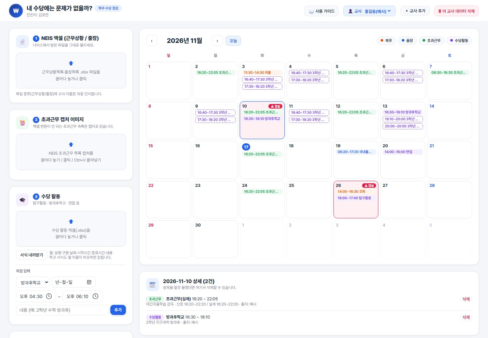
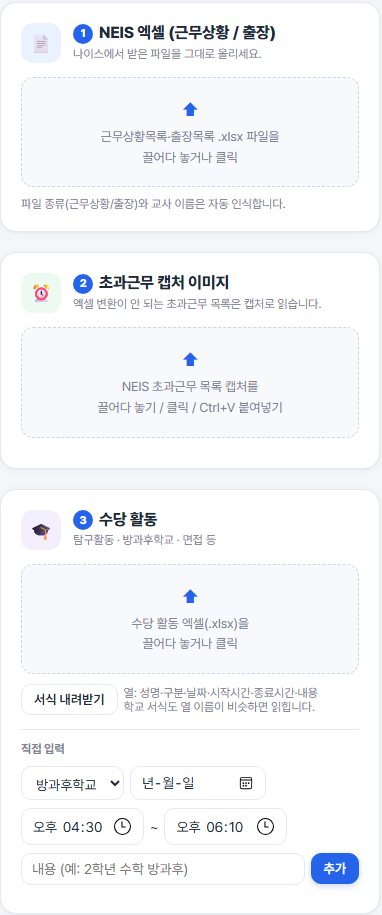
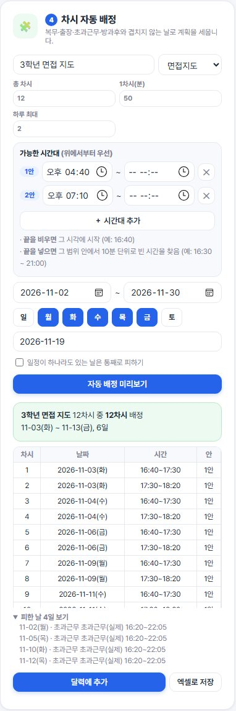
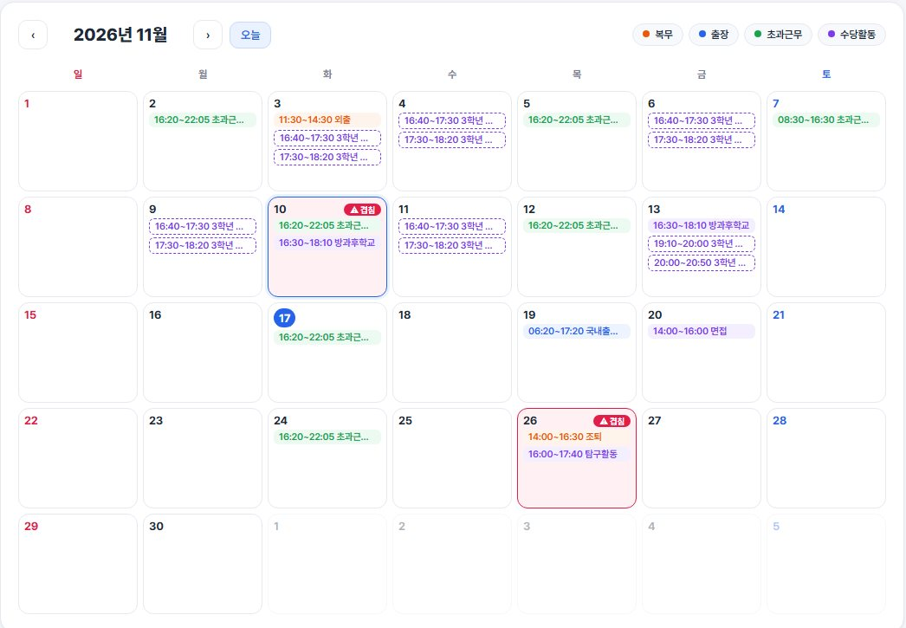
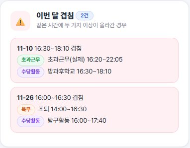
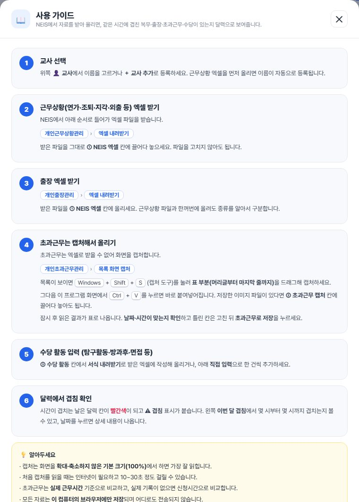

한눈에 보기
왼쪽에서 자료를 올리면 오른쪽 달력에 색깔별로 쌓이고, 시간이 겹치는 날은 ⚠ 겹침으로 표시됩니다.

연가·조퇴·지각·외출 (NEIS 엑셀)
관내·관외 출장 (NEIS 엑셀)
NEIS 목록 화면 캡처를 글자 인식
방과후·탐구활동·면접 등 (엑셀 또는 직접 입력)
교사 선택
위쪽 👤 교사에서 이름을 고르거나 ＋ 교사 추가로 등록합니다. 근무상황 엑셀을 먼저 올리면 파일 안의 이름으로 자동 등록돼요. 한 컴퓨터에서 여러 선생님의 자료를 따로 점검할 수도 있습니다.
근무상황 · 출장 엑셀 올리기

초과근무는 캡처해서 올리기
초과근무 목록은 NEIS에서 엑셀로 받을 수 없어서, 화면을 캡처하면 프로그램이 글자를 인식해 표로 바꿔 줍니다.
수당 활동 입력 (방과후 · 탐구활동 · 면접 등)
③ 수당 활동의 서식 내려받기로 받은 엑셀에 성명 · 구분 · 날짜 · 시작시간 · 종료시간 · 내용을 적어 올립니다. 학교에서 쓰는 서식도 열 이름이 비슷하면 읽혀요.
구분(방과후학교·탐구활동·면접·기타), 날짜, 시작~종료 시간, 내용을 넣고 추가. 몇 건 안 될 때 편해요.
차시 자동 배정 — 겹치지 않는 날로 계획 세우기
면접 지도 12차시, 탐구 지도 25차시처럼 여러 번에 나눠 운영하는 프로그램을 계획할 때 쓰는 기능입니다. 이미 올린 복무·출장·초과근무·방과후 등과 시간이 겹치지 않는 날만 골라 차례로 배정해 주니, 처음부터 겹침 없는 계획을 세울 수 있어요.
· 끝을 비우면 그 시각에 바로 시작
· 끝까지 넣으면(예: 16:30 ~ 21:00) 그 범위 안에서 비어 있는 시간을 10분 단위로 찾아 줍니다.
2026-12-03, 12/10~12/12) 일정이 하나라도 있는 날을 아예 피하고 싶으면 통째로 피하기에 체크하세요.

달력에서 겹침 확인

시간이 겹치는 날은 달력 칸이 빨간색이 되고 ⚠ 겹침 표시가 붙습니다.
왼쪽 이번 달 겹침에서 몇 시부터 몇 시까지, 어떤 기록끼리 겹치는지 볼 수 있어요. 예를 들어 초과근무 16:20~22:05와 방과후학교 16:30~18:10이 같은 날이면 1시간 40분이 겹친다고 알려 줍니다.
날짜를 누르면 아래에 그날의 상세 내용이 나오고, 잘못 올린 항목은 삭제할 수 있습니다. 위쪽 ‹ ›로 달을 넘겨 보세요.
알아두세요
- 이 프로그램은 시간이 겹치는 기록을 찾아 주는 점검 도구입니다. 수당 지급 기준이나 인정 여부는 학교·교육청 복무 규정을 따라 확인해 주세요.
- 모든 자료는 이 컴퓨터의 브라우저에만 저장되며 어디로도 전송되지 않습니다. 브라우저 기록을 지우면 함께 지워져요.
- 프로그램 안의 📖 사용 가이드 버튼으로 언제든 같은 안내를 다시 볼 수 있습니다.
